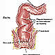

OncoGuía - Tratamientos contra el cáncer
-
 Adenoma de HipófisisGlándula situada en la silla turca
Adenoma de HipófisisGlándula situada en la silla turca -
 ColonLa última porción del aparato digestivo
ColonLa última porción del aparato digestivo -
 Cuello Uterino/Cérvixparte más inferior del aparato rep. femenino
Cuello Uterino/Cérvixparte más inferior del aparato rep. femenino -
Endometrio/úteroórgano hueco, situado en la pelvis.
-
 Esófagotubo hueco que transporta los alimentos
Esófagotubo hueco que transporta los alimentos -
 Estómagositúado en la parte alta del abdomen
Estómagositúado en la parte alta del abdomen -
 GliomasTumores cerebrales que proceden de las células gliales
GliomasTumores cerebrales que proceden de las células gliales -
 MamaGlándula destinada a la producción de leche
MamaGlándula destinada a la producción de leche -
 Médula Espinalel tejido nervioso más extenso del cuerpo
Médula Espinalel tejido nervioso más extenso del cuerpo -
 Meduloblastomatumores malignos en la fosa posterior del cerebro
Meduloblastomatumores malignos en la fosa posterior del cerebro -
 MelanomaCrecimiento de los melanocitos
MelanomaCrecimiento de los melanocitos -
 MeningiomasTumor cerebral usualmente benigno
MeningiomasTumor cerebral usualmente benigno -
 Metástasis CerebralesLesiones tumorales situadas en el cerebro y que proceden de otros tumores
Metástasis CerebralesLesiones tumorales situadas en el cerebro y que proceden de otros tumores -
 No MelanomaEl tumor más frecuente del ser humano
No MelanomaEl tumor más frecuente del ser humano -
 PáncreasGlándula que participa en el proceso de la digestión
PáncreasGlándula que participa en el proceso de la digestión -
 PróstataGlándula sexual exclusiva de los varones
PróstataGlándula sexual exclusiva de los varones -
 PulmónDos pulmones (derecho e izquierdo) localizados en el tórax.
PulmónDos pulmones (derecho e izquierdo) localizados en el tórax. -

RectoLa última porción del aparato digestivo
-
 Tumores InfantilesCada año se diagnostican 1.200 casos nuevos de tumores infantiles
Tumores InfantilesCada año se diagnostican 1.200 casos nuevos de tumores infantiles -
 Vejigaórgano situado en la parte baja de la pelvis
Vejigaórgano situado en la parte baja de la pelvis
Metástasis Cerebrales
Tratamiento
El tratamiento local de las metástasis cerebrales es multidisciplinar y depende fundamentalmente del número de metástasis, de la localización, del tamaño en el momento del diagnóstico, del estado general del paciente y del estado del tumor primario (controlado o no controlado).
En general el tratamiento local está basado en la realización de cirugía, radioterapia o la combinación de ambas.
Cirugía
El tratamiento con cirugía se reserva para aquellos casos en el que el número de metástasis es igual o inferior a tres y el tumor primario de donde proceden las metástasis está controlado. El objetivo de la cirugía es múltiple, por un lado consiste en extirpar la metástasis, y por otro, reducir la presión intracraneal y mejorar los síntomas neurológicos. Cuando se consigue extirpar por completo el pronóstico es mejor. La posibilidad de realizar una cirugía con extirpación total depende fundamentalmente de la localización del tumor. Tras la cirugía es preciso administrar tratamiento con radioterapia. La radioterapia puede realizarse bien a todo el cráneo (llamada holocraneal) o bien al lecho quirúrgico que ha quedado tras la cirugía (mediante técnica de esterotaxia [explicación de esta modalidad más abajo]).
Tratamiento con radiaciones
Cuando el número de metástasis es superior a tres, generalmente, se realiza tratamiento con radioterapia a todo el cráneo (llamada holocraneal). En aquellos casos en el que el número de metástasis es igual o inferior a tres y el tumor primario de donde proceden las metástasis está controlado, se puede realizar como alternativa e igual de efectiva que la cirugía la radioterapia en una única sesión (radiocirugía) o en pocas sesiones (estereotaxia) sobre la/s metástasis con la ventaja de que no precisan abordaje quirúrgico.
La técnica con la que se administre el tratamiento con radiaciones es fundamental, ya que la alta tecnología permite preservar zonas sensibles del cerebro próximas al tumor.
- Radioterapia 3D conformada: Se realiza la planificación empleando un TAC. Para administrar el tratamiento se utiliza aceleradores lineales.
- Radioterapia con intensidad modulada de dosis (IMRT): Es una forma de radiación más precisa que la radioterapia 3D, consigue reducir dosis sobre el cerebro sano que rodea al tumor.
- Radioterapia Guiada por Imagen-IGRT-Tomoterapia: Es el procedimiento más avanzado con alta tecnología que permite administrar un tratamiento de radioterapia helicoidal, altamente adaptado a cada paciente con lo que se alcanza una excelente dosis terapéutica sobre la metástasis y se preserva el tejido neural normal (menores secuelas). La Tomoterapia incluye un sistema de TAC (scanner) que se realiza diariamente para conocer la posición exacta del lecho quirúrgico o del tumor, de los órganos sanos y del paciente. Con este TAC, se ajusta la posición de tratamiento y minimiza el riesgo de error de colocación. Los efectos secundarios derivados de este tratamiento son mínimos, por lo que la calidad de vida del paciente, durante y tras el tratamiento son excelentes.
- En ocasiones se requiere una precisión aún mayor, como en el caso de pacientes irradiados previamente, por lo que se hace necesario un sistema de imágenes que nos permita saber, durante todo el tratamiento, la posición del paciente y de la lesión con una detección y corrección de los errores de forma automática. Esto permite administrar altas dosis en pocas sesiones (de 1 a 5). El sistema de Radiocirugía Robotizada Guiada por Imagen-CyberKnife cumple todos estos criterios.
Quimioterapia
La quimioterapia suele realizarse antes o tras la cirugía o radioterapia como tratamiento sistémico (general) complementario para controlar o prevenir la aparición de células tumorales en otras localizaciones.
Pronóstico
El pronóstico de las metástasis cerebrales depende del número de metástasis, de la localización de la lesión, de la posibilidad de hacer cirugía o radiocirugía, y del estado del tumor primario del cual derivan estas metástasis cerebrales. Un buen control del tumor primario y la realización de cirugía o radiocirugía se asocian con un mejor pronóstico.
Aspecto Psico-oncológico
En los últimos años, se están realizando importantes avances en el tratamiento de las metástasis cerebrales, lo que está aumentando de forma notable la supervivencia del paciente, disminuyendo los efectos secundarios de los tratamientos y mejorando la calidad de vida del enfermo.
Los pacientes con estas lesiones pueden presentar características psicológicas diferenciales con respecto a otras patologías oncológicas, ya que el diagnóstico de este tipo de lesión puede asociarse con percepción de falta de control de la enfermedad y reacciones emocionales intensas, acompañadas de elevada frustración y sensación de desesperanza.
Junto con la sintomatología emocional, pueden aparecer déficits cognitivos hasta en el 75% de los pacientes que pueden afectar tanto a la capacidad funcional como a la calidad de vida del enfermo y de la familia. Las alteraciones cognitivas más comunes son: fallos en aprendizaje, memoria, destreza motora, alteraciones en el comportamiento tales como labilidad emocional, apatía, desinhibición, aumento de la irritabilidad y cambios en el contenido del pensamiento.
Los programas de neuro-rehabilitación permiten disminuir las posibles reacciones emocionales y secuelas cognitivas derivadas de la enfermedad, facilitando la adaptación a la vida diaria del paciente y sus familiares, siendo necesario el trabajo en equipo por parte de los diferentes profesionales.
Si necesita más información sobre cómo afrontar un diagnóstico de metástasis cerebral, le ofrecemos unas pautas que le podrán ayudar a asumir y a adaptarse a la nueva situación. Puede consultarlas en el apartado de Apoyo Psicológico.
Asimismo, si quiere conocer las experiencias y testimonios de personas que han pasado por esta situación puede consultar en Curados de cáncer.